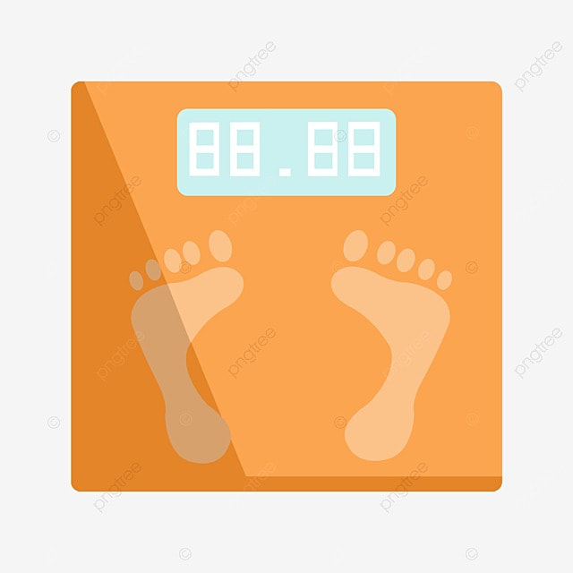

<ion-header [translucent]="true">
  <ion-toolbar color="primary">
    <ion-title>
      App BMI
    </ion-title>
  </ion-toolbar>
</ion-header>

<ion-content class="ion-pading" [fullscreen]="true">
  <div class="ion-text-center"></div>
  <ion-card color="warning" class="ion-padding">
<ion-item>
  <ion-input label="กรอกน้ำหนัก :" placeholder="kg" [(ngModel)]="weight"></ion-input>
</ion-item>
<br>
<ion-item>
  <ion-input label="ส่วนสูง :" placeholder="cm" [(ngModel)]="hight"></ion-input>
</ion-item>
<br>
<ion-button size="large" expand="block" shape="round" (click)="oncal()">คำนวณ</ion-button>
  </ion-card>

<ion-content>
<ion-card color="danger" class="ion-text-center">
<ion-card-header>
  <ion-card-subtitle>ผลลัพธ์</ion-card-subtitle>
  <ion-card-title>{{ result | number : '1.0-2'}}</ion-card-title>
</ion-card-header>
</ion-card>

<ion-card color="success" class="ion-text-center">
  <ion-card-header>
    <ion-card-subtitle>แปรผล</ion-card-subtitle>
    <ion-card-title>{{result_text}}</ion-card-title>
  </ion-card-header>
  </ion-card>

</ion-content>
